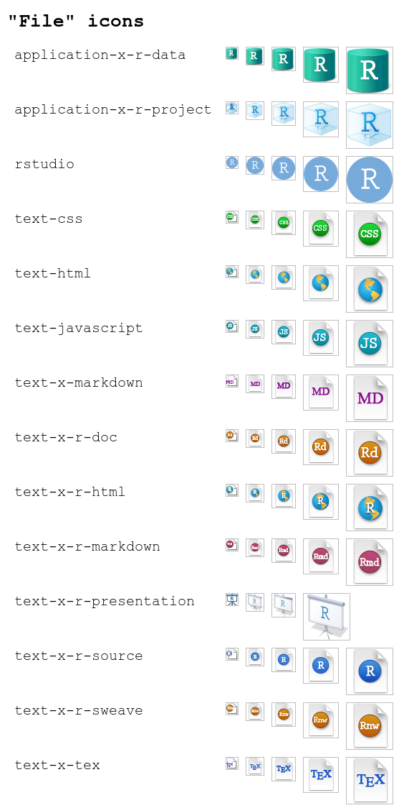

Get started with rsicons
get-started.RmdThe rsicons package allows you to insert icons from the RStudio IDE into your R Markdown documents and Shiny applications easily with one function: icon(). This might be particularly useful for documents designed for teaching and/or documentation as it allows you to avoid the pesky “take a screenshot and insert into your document” step. You can insert the logos as stand-alone images or inline.
Inserting icons
For example, if you insert the following in an R Markdown document:
You’ll get the following output when you knit your document:
Click on to create a new branch.
You can also insert images on their own. By default, rsicons will use the closest size available for the height you specify. For example, in the output below, we specify height = 100 but the image that’s displayed is 128x128.
icon("rstudio", height = 100)To get the precise height you want, use resize = TRUE.
icon("rstudio", height = 100, resize = TRUE)Icon information
You can get information on any of the icons with icon_info(). This is especially helpful for figuring out available sizes.
icon_info("rstudio")
#> $type
#> [1] "File"
#>
#> $sizes
#> [1] "16x16" "24x24" "32x32" "48x48" "64x64" "128x128" "256x256"
#> [8] "512x512"
#>
#> $formats
#> [1] "PNG"Available icons
A listing of currently available icons can be obtained with available_icons(), this listing can be refined by providing a pattern which uses regular expressions to match the icon names with the pattern argument.
available_icons(pattern = "vcs")
#> $Other
#> [1] "vcsUnstage"
#>
#> $Source
#> [1] "vcsFileDiff"
#>
#> $VCS
#> [1] "vcsAddFiles" "vcsCommit" "vcsDiff" "vcsIgnore"
#> [5] "vcsPull" "vcsPullRebase" "vcsPush" "vcsRefresh"
#> [9] "vcsRemoveFiles" "vcsResolve" "vcsRevert" "vcsShowHistory"
#> [13] "vcsViewOnGitHub"Similarly, a list of all available types can obtained with available_types().
available_types()
#> [1] "Application" "Build" "Common"
#> [4] "Common - Code" "Connections" "Console"
#> [7] "Debugging" "Environment" "File"
#> [10] "Files" "Help" "History"
#> [13] "HTML preview" "Jobs" "Other"
#> [16] "Packages" "packrat" "PDF"
#> [19] "Plots" "Plumber IDE features" "Presentation"
#> [22] "Profiler" "Projects" "RSConnect connectivity"
#> [25] "Shiny IDE features" "Source" "Terminal"
#> [28] "Tutorial" "VCS" "Version control"
#> [31] "Viewer" "Workspace"If instead you would would more directly like to view the available icons, you can use the preview functions:
preview_icon("application-x-r-project")
preview_type("File")